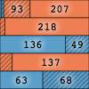
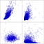
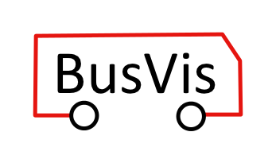

Publications

A Workflow for Visual Diagnostics of Binary Classifiers using Instance-Level Explanations
Josua Krause, Aritra Dasgupta, Jordan Swartz, Yindalon Aphinyanaphongs, Enrico Bertini
IEEE Transactions on Visualization and Computer Graphics (VAST 2017) — Oct 2017[page] [demo] [pdf] [video] [talk] [github] [slides] [bibtex]

Towards Understanding Human Similarity Perception in the Analysis of Large Sets of Scatter Plots
Anshul Vikram Pandey, Josua Krause, Cristian Felix, Jeremy Boy, Enrico Bertini
ACM CHI 2016 — May 2016[pdf] [external] [bibtex]

Interactive Visualization for Real-Time Public Transport Journey Planning
Josua Krause, Marc Spicker, Leonard Wörteler, Matthias Schäfer, Leishi Zhang, Hendrik Strobelt
SIGRAD 2012 — Short Paper — 2012[pdf] [github] [slides] [external] [bibtex]
Posters / Workshops
Interpreting Black-Box Classifiers Using Instance-Level Visual Explanations
Paolo Tamagnini, Josua Krause, Aritra Dasgupta, Enrico Bertini
Workshop on Human-In-the-Loop Data Analytics (HILDA 2017) — May 14, 2017[demo] [pdf] [github] [external] [bibtex]
Explanatory Visual Analytics for Enhancing Human Interpretability of Machine Learning Models
Josua Krause, Aritra Dasgupta, Enrico Bertini
Visualization in Data Science (VDS at IEEE VIS 2016) — Oct 24, 2016[page] [slides] [external]
Visual Exploration of Temporal Data in Electronic Medical Records
Josua Krause, Narges Razavian, Enrico Bertini, David Sontag
AMIA Annual Symposium (Poster) — Nov 16, 2015[poster]
Visual Inspection of Longitudinal Electronic Medical Records
Josua Krause, Narges Razavian, Enrico Bertini, David Sontag
Visual Analytics in Health Care (Workshop) — Oct 25, 2015[slides]
Data-Driven Cohort Construction with Interactive Visual Queries
Josua Krause, Adam Perer
Visual Analytics in Health Care (Workshop) — Oct 25, 2015
INFUSE: Interactive Feature Selection for Predictive Modeling of High Dimensional Data
Josua Krause, Adam Perer, Enrico Bertini
Moore Sloan Poster Session NYU (Poster) — May 2014[external]
Annotation of Changes in Evolving Graphs
Josua Krause
Summer School Poster Session Universität Konstanz (Poster) — 2011
Notable Projects
patient-viz
Josua Krause, Narges Sharif Razavian, Enrico Bertini, David Sontag
GitHub — Jan 2015[github]
Theses
Using Visual Analytics to Explain Black-Box Machine Learning
Josua Krause
PhD Thesis, NYU Tandon School of Engineering — Mar 15, 2018[pdf]
Graph Comics: Interactive Staging for Exploring Dynamic Graphs
Josua Krause
Master Thesis, Universität Konstanz — Mar 23, 2014[pdf]
Annotation of Changes in Evolving Graphs — Annotation veränderlicher Graphen
Josua Krause
Bachelor Thesis, Universität Konstanz — Nov 10, 2011[pdf]
Teaching
VIS for Practice Workshop — Visualization for the Web: Front- & Backends
Workshop
Universität Konstanz — Aug 7, 2018
D3 Tutorial on Electronic Health Records — Introduction to Visual Analytics in Healthcare
Hands-on Tutorial Session
AMIA Annual Symposium — Nov 15, 2015[github]